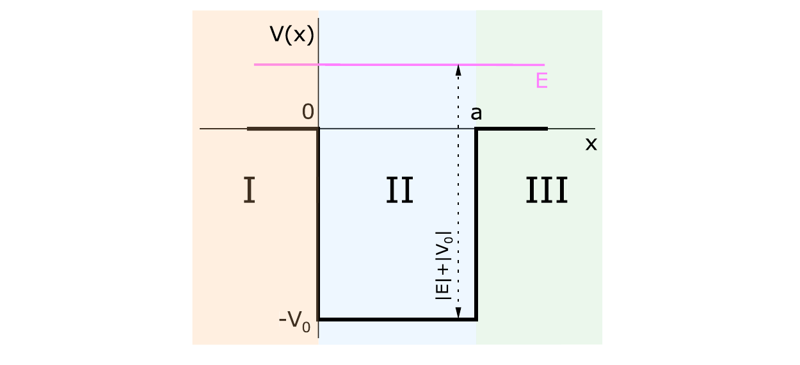
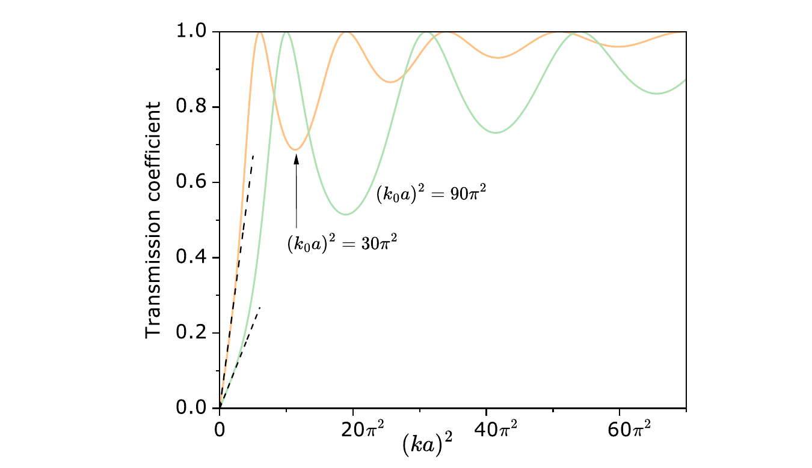

The objective is to determine the transmission and reflection coefficients for a wave incident from the left on the finite potential well. Here the particle has positive energy, \(E>0\), so there is no bound state.

Figure 4.7: finite potential well for the positive-energy scattering problem. The potential is zero in regions I and III and equals \(-V_0\) in region II; the particle is incident from the left.
\[-\frac{\hbar^2}{2m}\frac{d^2\psi(x)}{dx^2}=|E|\psi(x)\quad\Longrightarrow\quad\frac{d^2\psi(x)}{dx^2}+k^2\psi(x)=0\]
\[k^2=\frac{2m}{\hbar^2}|E|>0\]
\[\psi_{\mathrm I}(x)=Ae^{ikx}+Be^{-ikx}=\psi_i(x)+\psi_r(x),\qquad\psi_{\mathrm{III}}(x)=Fe^{ikx}=\psi_t(x)\]
\[-\frac{\hbar^2}{2m}\frac{d^2\psi(x)}{dx^2}-|V_0|\psi(x)=|E|\psi(x)\quad\Longrightarrow\quad\frac{d^2\psi(x)}{dx^2}+\bar{k}^{\,2}\psi(x)=0\]
\[\bar{k}^{\,2}=k_0^2+k^2>0,\qquad k_0^2=\frac{2m|V_0|}{\hbar^2}\]
\[\psi_{\mathrm{II}}(x)=Ce^{i\bar{k}x}+De^{-i\bar{k}x}\]
The coefficients \(A,B,C,D,F\) are determined by the boundary conditions.
\[\psi_{\mathrm I}(0)=\psi_{\mathrm{II}}(0),\qquad\psi_{\mathrm{II}}(a)=\psi_{\mathrm{III}}(a)\]
\[\psi'_{\mathrm I}(0)=\psi'_{\mathrm{II}}(0),\qquad\psi'_{\mathrm{II}}(a)=\psi'_{\mathrm{III}}(a)\]
Introduce \(\alpha=A/F\), \(\beta=B/F\), \(\zeta=C/F\), and \(\delta=D/F\). The four conditions then determine these coefficient ratios.
\[\alpha+\beta=\zeta+\delta,\qquad\zeta e^{i\bar{k}a}+\delta e^{-i\bar{k}a}=e^{ika}\]
\[\frac{\bar{k}}{k}(\alpha-\beta)=\zeta-\delta,\qquad\frac{\bar{k}}{k}\left(\zeta e^{i\bar{k}a}-\delta e^{-i\bar{k}a}\right)=e^{ika}\]
\[\delta=\frac12\left(1-\frac{k}{\bar{k}}\right)e^{i(k+\bar{k})a},\qquad\zeta=\frac12\left(1+\frac{k}{\bar{k}}\right)e^{i(k-\bar{k})a}\]
Using the preceding relations, the remaining coefficient ratios are obtained by the corresponding algebraic additions and subtractions.
\[\alpha=\left[\cos(\bar{k}a)-i\bar{q}_+\sin(\bar{k}a)\right]e^{ika},\qquad\bar{q}_{\pm}=\frac{k^2\pm\bar{k}^{\,2}}{2k\bar{k}}\]
\[\beta=-i\bar{q}_-\sin(\bar{k}a)e^{ika}\]
These expressions provide the ratios required for transmission and reflection.
\[T=\frac{|F|^2}{|A|^2}=\frac{1}{|\alpha|^2},\qquad R=\frac{|B|^2}{|A|^2}=\frac{|\beta|^2}{|\alpha|^2}\]
\[|\alpha|^2=1+\bar{q}_-^{\,2}\sin^2(\bar{k}a)\]
\[T=\frac{1}{1+\bar{q}_-^{\,2}\sin^2(\bar{k}a)},\qquad R=\frac{\bar{q}_-^{\,2}\sin^2(\bar{k}a)}{1+\bar{q}_-^{\,2}\sin^2(\bar{k}a)}\]
The coefficients obey \(R+T=1\).

Figure 4.8: transmission coefficient as a function of \((ka)^2\), which represents the particle energy. The dashed curves show the low-energy case.
\[\bar{q}_-^{\,2}=\frac{(k_0a)^4}{4(ka)^2\left[(k_0a)^2+(ka)^2\right]}\]
\[T_{k_0a}(ka)=\left[1+\frac{(k_0a)^4}{4(ka)^2\left[(k_0a)^2+(ka)^2\right]}\sin^2\!\left(\sqrt{(k_0a)^2+(ka)^2}\right)\right]^{-1}\]
This is the transmission coefficient written in terms of \((ka)^2\), which depends on the particle energy, and \((k_0a)^2\), which depends on the well parameters.
Perfect transmission requires
\[\sin^2\!\left(\sqrt{(k_0a)^2+(ka)^2}\right)=0,\qquad( k_na)^2=n^2\pi^2-(k_0a)^2>0\]
For low energy, \((ka)^2\ll(k_0a)^2\), the transmission coefficient becomes
\[T(ka,k_0a)\approx(ka)^2\left[\frac{2}{k_0a\sin(k_0a)}\right]^2\]
In this limit, the transmission coefficient is proportional to the energy of the particle.
This page supports guided exercises on positive-energy scattering from a finite potential well.
Use from this page: the three regional wave functions, the four boundary conditions, and the coefficient ratios.Keep in the book: the algebra that eliminates the coefficients and the worked numerical cases.Good exercise balance: identify the region, apply the matching conditions, then calculate \(T\) or \(R\).
Use these anchors to build compact exercises from the finite-well scattering calculation.
Focus: positive-energy regional solutions and transmission.Conceptual check: identify which amplitudes belong to the incident, reflected, and transmitted waves.Key equation: \[T=\frac{1}{1+\bar{q}_-^{\,2}\sin^2(\bar{k}a)},\qquad\bar{q}_-=\frac{k^2-\bar{k}^{\,2}}{2k\bar{k}}\]Definitions: \[k^2=\frac{2m|E|}{\hbar^2},\qquad\bar{k}^{\,2}=k_0^2+k^2,\qquad k_0^2=\frac{2m|V_0|}{\hbar^2}\]Boundary: use the displayed conditions to set up the calculation; use the book for the complete coefficient algebra.Typical task: obtain \(T\) and verify \(R+T=1\).Original book and previews: Source note: Original auxiliary summary for this book-app, based on Chapter 4 of Mario Reis, Quantum Mechanics , Elsevier, 2026. Book text and figures are copyright © 2026 Elsevier Inc.; consult the original book for the complete presentation, derivations and exercises.